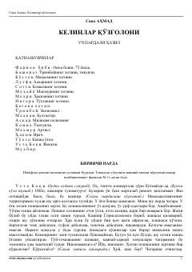

KQAnʼanaviy va zamonaviy qarashlar toʻqnashuvi aks etgan mashhur oʻzbek komediyasi.
Said Ahmadning ushbu mashhur asari oʻzbek oilalaridagi anʼana va yangi zamon oʻrtasidagi ziddiyatlarni hajviy ruhda ochib beradi. Farmonbibi va uning kelinlari oʻrtasidagi qiziqarli voqealar jamiyatdagi eskicha qarashlar hamda yangilanish intilishlarini aks ettiradi. Asar oʻzining oʻtkir tili va kulgili vaziyatlari bilan oʻquvchini jalb qiladi.